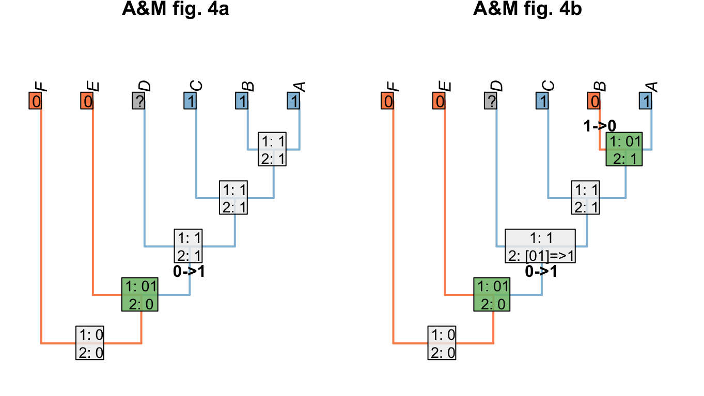

2 Optimizing ambiguous characters
A number of approaches have been proposed concerning which resolution of ambiguous nodes is preferable.
The two most familiar approaches to resolving ambiguous node are the Accelerated Transformation (AccTran) and Delayed Transformation (DelTran) approaches.
The AccTran approach reconstructs transformations as occurring as close to the root as possible; the DelTran, as far from the root as possible.
In this case, the ambiguous resolution of the root leaves two options for the latter:

If the states 0 and 1 represent states of a transformational character –
whether an organism’s tail is red or blue, say – then there is no reason to prefer
any of the equally-parsimonious reconstructions, as none implies any more homology
than any other.
With neomorphic characters, however, state 0 stands for the absence of a character
– for example, a tail –
and state 1 its presence. On one view, a reconstruction that minimises the number
of times that such a character evolves attributes more similarity to homology than
an equally parsimonious reconstruction in which said character is gained multiple times
independently.
In this particular case, the DelTran reconstruction maximises homology. If the
character denotes the presence or absence of a tail, then this reconstruction invokes the presence of a tail in the common ancestor of all taxa, meaning that the tails present in
tips a, d, e and h are homologous with one another.
The AccTran reconstruction, in contrast, identifies a loss of a tail
at nodes 11 and 14, with a tail evolving independently in tips a and h.
Under this reconstruction, the tails of a and h are not homologous with each other,
or with the tails of d and e.
(The alternative DelTran approach, which could arguably be described as AccTran too,
invokes four independent origins of the character and clearly does not maximise its homology.)
Neither AccTran nor DelTran is guaranteed to maximise homology (Agnarsson & Miller, 2008).
Where we wish to maximise homology, we modify the Fitch uppass such that any node whose final state reconstruction is ambiguous is instead reconstructed as present.
We can show that this maximises homology in the problematic trees presented by Agnarsson & Miller [(2008); “A&M”]:

And this approach is robust to missing entries:

References
Agnarsson, I., & Miller, J. A. (2008). Is AccTran better than DelTran? Cladistics, 24(6), 1032–1038. doi:10.1111/j.1096-0031.2008.00229.x